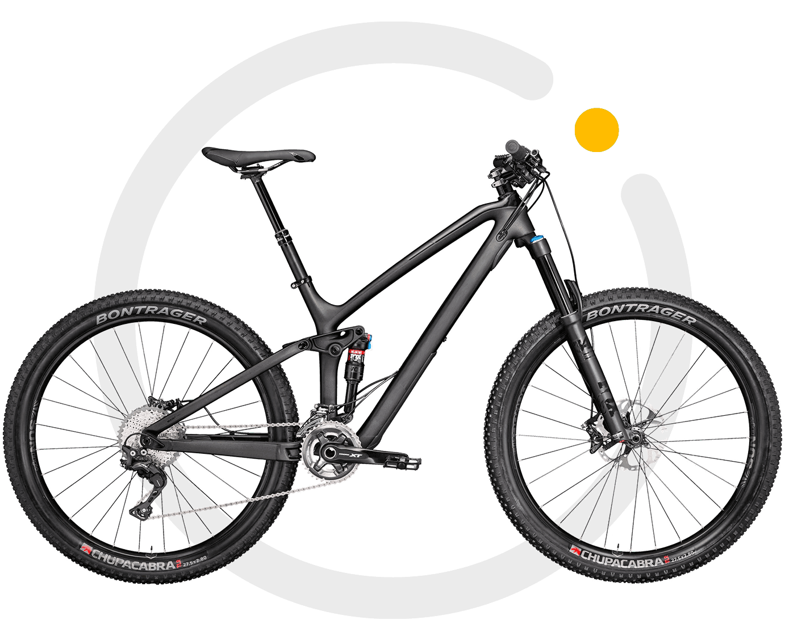

ПРОФИСПОРТ · ОРЕНБУРГВернём велосипед
Вернём велосипед
в движение
Диагностика, настройка и обслуживание.
Расскажите о проблеме — начнём с неё.
01—03
Как воспользоваться сервисом
- Ознакомьтесь с прайс-листом и выберите нужную услугу.
- Если остались вопросы, позвоните в магазин — подскажем по работам и стоимости.
- Привозите велосипед: дополнительные работы согласуем после осмотра.
Оренбург, проспект Победы, 79
Что нужно вашему велосипеду?
Выберите интересующие работы, чтобы собрать список и свериться с прайсом. Если причина неизвестна, начните с диагностики.
Работы пока не выбраныСтоимость и сроки уточняются после осмотра велосипеда
Позвонить в магазинКак устроен велосипед
Выберите деталь на велосипеде или её название. Подскажем, за что она отвечает и на что обратить внимание перед обращением в мастерскую.

Выберите отметку, чтобы узнать о детали. Конструкция вашей модели может отличаться.ПРОФИСПОРТ · ОРЕНБУРГ
Будем рады видеть вас
Проспект Победы, 79
Магазин спортивных товаров
Построить маршрут →Карточка магазина в 2ГИС